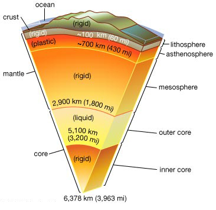

Earth
Believed to be about 4.6 billion years old, it is some 92,960,000 mi (149,600,000 km) from the Sun. It orbits the Sun at a speed of 18.5 mi (29.8 km) per second, making one complete revolution in 365.25 days. As it revolves, it rotates on its axis once every 23 hours 56 minutes 4 seconds. The fifth largest planet of the solar system, it has an equatorial circumference of 24,902 mi (40,076 km). Its total surface area is roughly 197,000,000 sq mi (509,600,000 sq km), of which about 29% is land. Earth's atmosphere consists of a mixture of gases, chiefly nitrogen and oxygen. Its only natural satellite, the Moon, orbits the planet at a distance of about 238,860 mi (384,400 km). Earth's surface is traditionally subdivided into seven continental masses: Africa, Antarctica, Asia, Australia, Europe, North America, and South America. These continents are surrounded by four major bodies of water: the Arctic, Atlantic, Indian, and Pacific oceans. Broadly speaking, Earth's interior consists of two regions: a core composed largely of molten, iron-rich metallic alloy; and a rocky shell of silicate minerals comprising both the mantle and crust. Fluid motions in the electrically conductive outer core generate a magnetic field around Earth that is responsible for the Van Allen radiation belts. According to the theory of plate tectonics, the crust and upper mantle are divided into a number of large and small plates that float on and travel independently of the lower mantle. Plate motions are responsible for continental drift and seafloor spreading and for most volcanic and seismic activity on Earth.

Earth's interior may be identified in two distinct ways. In chemical terms, it has three basic layers (left): the crust consists of granitic and basaltic rock, the mantle of silicate materials, and the core primarily of nickel and iron. Measured by physical properties, it has five principal layers (right): the lithosphere is a rigid outer layer, the asthenosphere is a thin layer of plastically deforming material that flows under stress, the mesosphere is a rigid layer that extends down to the core, the outer core is a viscous liquid in which Earth's magnetic field is believed to originate, and the inner core is solid. The layers are not drawn to scale.